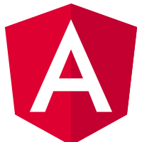

<content>

    <article>
        <section class="animate__animated animate__fadeIn">
            <h1> Sobre Mim</h1>
            <p>Meu nome é Raul, e sou um desenvolvedor full-stack apaixonado por tecnologia e inovação. </p>
            <p>Com 4 anos, tenho aprimorado minhas habilidades em PHP e Angular para criar soluções robustas e
                escaláveis para empresas e organizações de diferentes segmentos. </p>
            <p>Desde o início da minha carreira, tenho trabalhado em projetos complexos, colaborando com equipes
                multidisciplinares para garantir resultados de alta qualidade. </p>
            <p>Meu objetivo é sempre entregar soluções eficientes e inovadoras que atendam às necessidades dos clientes
                e superem suas expectativas. </p>
            <p>Acredito que a combinação de habilidades técnicas e capacidade de colaboração é fundamental para o
                sucesso de qualquer projeto e sempre procuro trabalhar com paixão e dedicação.</p>
            <hr>
        </section>

        <section class="animate__animated animate__fadeIn">
            <h2>FRONT-END</h2>
            <p> Minhas habilidades em front-end incluem o desenvolvimento de interfaces de usuário interativas e
                atraentes, bem como a otimização da performance de aplicativos web. </p>

            <p>Sou especialista em tecnologias como HTML, CSS, JavaScript e frameworks como React e Angular.</p>

            <p>Além disso, sempre procuro acompanhar as tendências da indústria e
                aprender novas tecnologias para garantir que minhas soluções sejam modernas e inovadoras.</p>

            <div class="techs">
                <div class="tech-item">
                    
                    <span>Angular</span>
                </div>
                <div class="tech-item">
                    
                    <span>Vue</span>
                </div>
                <div class="tech-item">
                    
                    <span>HTML 5</span>
                </div>
                <div class="tech-item">
                    
                    <span>CSS3</span>
                </div>
            </div>
        </section>
        <hr>
        <section class="animate__animated animate__fadeIn">
            <h2>BACK-END</h2>
            <p> No back-end, tenho experiência com linguagens de programação como PHP e NestJs, bem como com
                banco de dados relacionais e NoSQL. Sou capaz de desenvolver aplicativos de back-end de alta performance
                e
                escaláveis,
                garantindo que as soluções possam crescer junto com as necessidades das empresas.</p>

            <div class="techs">
                <div class="tech-item">
                    
                    <span>Laravel</span>
                </div>
                <div class="tech-item">
                    
                    <span>Nest</span>
                </div>
            </div>
        </section>
        <hr>

        <section class="animate__animated animate__fadeIn">
            <h2>MOBILE</h2>
            <p> No Mobile, tenho experiência com linguagens de programação como Flutter, não tenho aplicativos
                publicados oficialmente, pois todos as experiências que tive foram de aplicativos para uso iterno dos
                quais não foram publicados.</p>

            <div class="techs">
                <div class="tech-item">
                    
                    <span>Flutter</span>
                </div>
            </div>
        </section>
    </article>
</content>